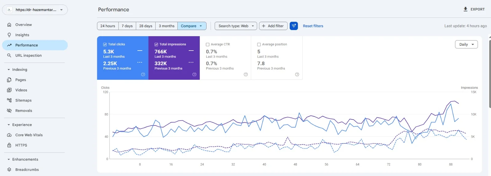
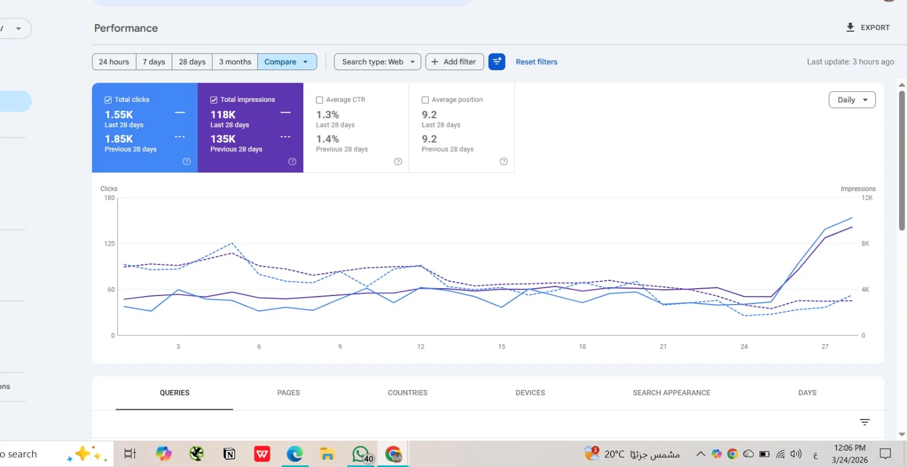
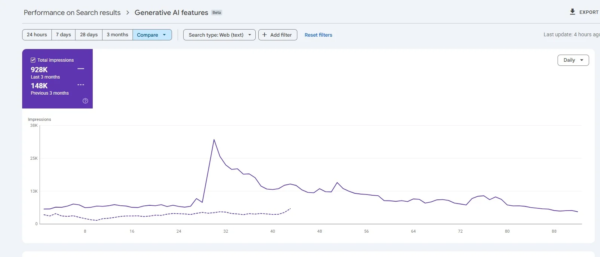
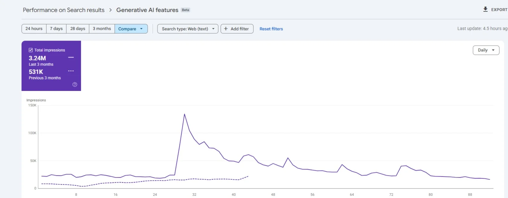
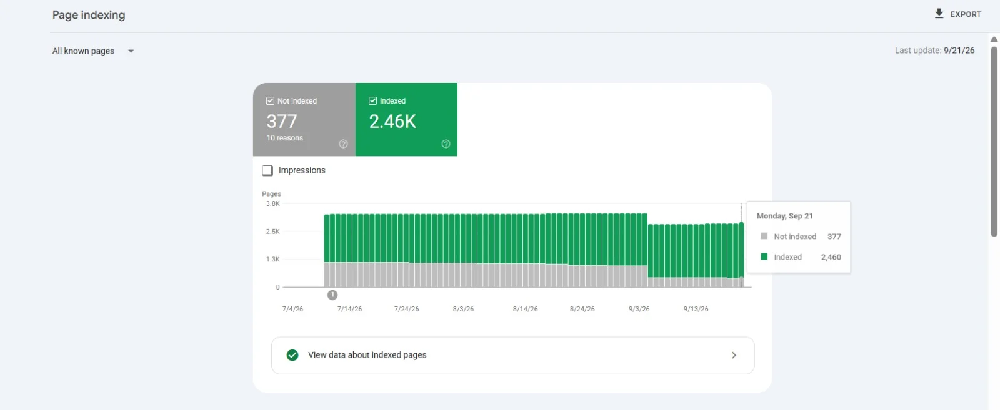
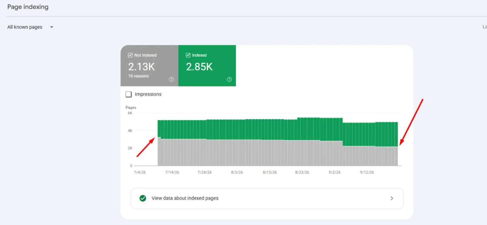
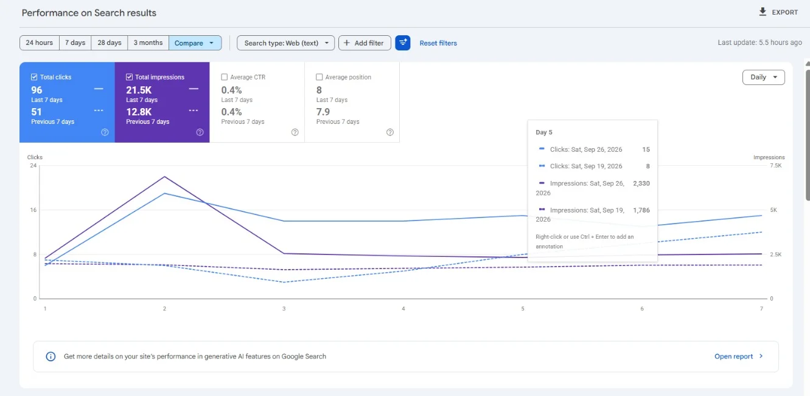
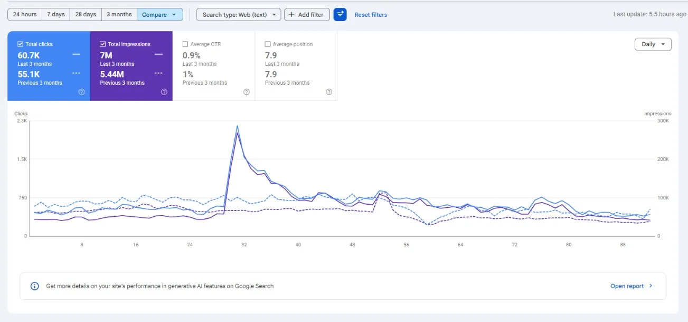
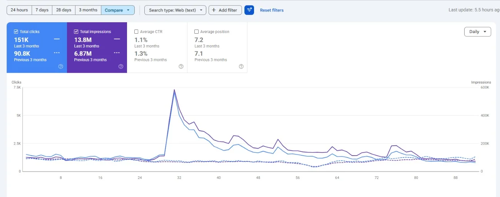

SEO Case Studies & Verified Evidence
An in-depth review of diagnostic findings, technical remediation, structural restructuring, and measurable organic traffic outcomes recorded in Google Search Console.
Growing a Medical Website with SEO
Overview: A medical website with strong content but weak search visibility. Our goal was to help more patients find it on Google and turn more visitors into customers.
Results (Last 3 Months vs. Previous 3 Months)
Daily clicks grew from around 20-30 to 60-70, and the growth was steady, not a short spike.
Primary Performance Report

Step 1: Analysis and Diagnosis
We started with a full audit of the website, covering technical SEO, content, and site structure. What we found: no major technical problems; some pages needed better content; the main problem was weak internal linking. Many pages were not connected to each other, which left several orphan pages (pages with no internal links pointing to them). Google struggles to find and rank these pages.
Step 2: The Action Plan
- Fixing internal links: We connected related pages and built a clear structure, so every page can be reached easily by users and by Google. The orphan pages are no longer isolated.
- Adding Call-to-Actions (CTAs): We placed clear CTAs on key pages to guide visitors toward the next step and improve the conversion rate.
- Improving page design: We improved the layout of selected pages to make them easier to read and use.
- Improving content: We updated and improved weak pages so they better answer what patients are searching for.
The Outcome
Fixing the internal linking was the biggest driver of growth. Better content, CTAs, and design supported it. The average position moved from 9.2 to 5.2, meaning many pages moved from the second page of Google to the first.
What's Next
The click-through rate (CTR) is still 0.7%, so the next step is to improve page titles and meta descriptions to turn more impressions into clicks.
Secondary Diagnostic Report

Fixing Keyword Cannibalization and Technical Issues on a Travel Website
Overview: A travel website with many articles and pages, but poor search performance. Several pages were competing with each other on Google, and technical problems were holding the site back. Our goal was to fix these issues and grow organic traffic.
Results (Last 28 Days vs. Previous 28 Days)
Performance Report: Tourist Office
Tourist Office Performance Screenshot
The original source capture for "Tourist office" is being updated and will be uploaded directly to this slot.
Step 1: The Problems We Found
- Keyword cannibalization: Many articles and pages targeted the same keywords and the same search intent. Instead of one strong page, Google saw several weak pages competing with each other, so none of them ranked well.
- Technical issues: Technical problems were hurting the website's performance. One of the biggest was suspicious bot traffic coming from unknown sources. These bots sent a huge number of requests to the server and slowed it down.
Step 2: The Action Plan
- Finding the overlapping content: We analyzed all articles and pages and grouped the ones covering the same topic.
- Deciding what to keep and what to merge: For each group, we checked the performance of every page in Google Search Console (clicks, impressions, and rankings). Based on the data, we chose the strongest page to keep. The weaker pages were merged into it, with 301 redirects to send users and Google to the main page.
- Blocking harmful bots: We set up rules in Cloudflare to block the unknown bots. This reduced the load on the server and helped the website run faster and more reliably.
- Improving content: We improved the content of the main pages so they answer what travelers are searching for.
The Outcome
Clicks grew by 71% and the average position improved by 2 positions in one month. With one strong page per topic instead of many competing ones, Google can now understand the site better and rank its pages higher. A stable server also gives Google a better experience when it visits the site.
What's Next
Impressions are growing, but CTR is still low at 0.4%. The next step is to improve titles and meta descriptions, and to keep monitoring the site for new overlapping content.
Organizing a Large E-commerce Website (36,000+ Products) for Better SEO
Overview: An e-commerce website with more than 36,000 products. At this size, a messy structure makes it very hard for Google to understand the site. Our goal was to fix the technical problems and organize the categories and product pages so Google can crawl and rank them properly.
Current Results (Last 3 Months)
Performance Report: 3-Month Overview

Step 1: The Problems We Found
- Weak category structure: Categories were not organized clearly, and product pages had no clear order. This made it hard for both users and Google to understand how the products relate to each other.
- Many technical issues: The audit showed many technical problems. Some were critical, such as broken pages returning 404 errors, and they were affecting how Google crawls and indexes the website.
Step 2: The Action Plan
- Fixing critical technical issues first: We started with the problems that had the biggest impact, including 404 errors and other critical issues. Solving these first made sure Google could crawl the site without wasting time on broken pages.
- Organizing categories: We rebuilt the category structure in a clear and logical way, so every product sits in the right place and similar products are grouped together.
- Improving product and category pages: We fixed issues on the pages and improved the content, so each page clearly explains what it offers and matches what customers search for.
- Helping Google understand the site: With a cleaner structure and better content, Google can now understand each page's topic and show it for the right searches.
The Outcome
Over three months, the website earned 13.2K clicks and 748K impressions. Fixing the technical problems and organizing the categories gave the site a solid foundation for growth, which matters most for large stores with thousands of products.
What's Next
The average position is 12.1, so many pages are still on the second page of Google. The next steps are to optimize titles and meta descriptions, strengthen the top categories, and keep monitoring the site for new technical issues.
Search Console Evidence
Raw Google Search Console telemetry captures verifying crawl health, indexing coverage, and traffic milestones across diverse client engagements.







